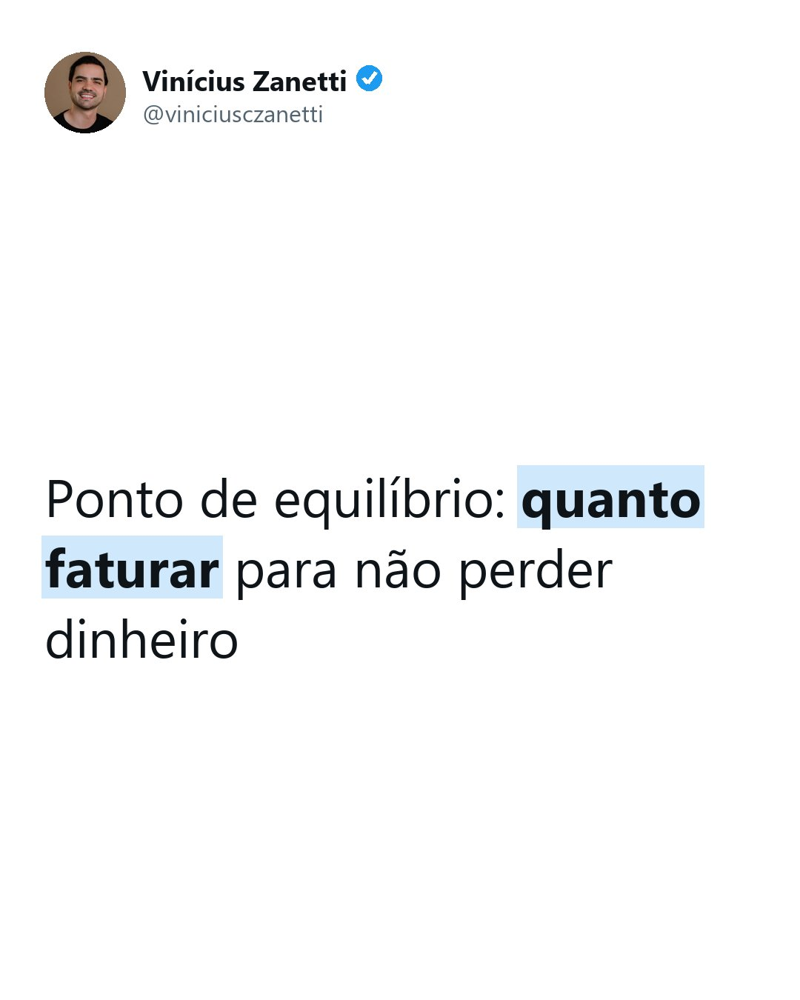

Ponto de equilíbrio do restaurante: quanto é preciso faturar para não perder dinheiro
É o número que responde à pergunta mais básica do negócio. A conta usa só duas informações, o custo fixo e a margem de contribuição. Veja o passo a passo e o que acontece quando o CMV muda.
Publicado em 16/11/2026
Quanto o restaurante precisa vender por mês para pagar todas as contas? Muitos donos não sabem responder, e é essa a pergunta que o ponto de equilíbrio resolve. No livro Restaurante no Controle, o consultor Vinícius Zanetti coloca esse número entre os primeiros do diagnóstico, na etapa Mapeia do Método M.E.G.A.
A conta é curta e usa duas informações que saem da DRE: o custo fixo do mês e a margem de contribuição. A conta aparece, resumida, entre as 4 contas que o dono de hamburgueria precisa fazer. Aqui, a fórmula, o passo a passo e o efeito do CMV sobre o número.

O que é ponto de equilíbrio?
É o faturamento em que o restaurante não ganha nem perde. Abaixo dele, o mês fecha no prejuízo. Acima, cada real vendido começa a deixar lucro. O livro cita a definição dos pesquisadores Laranjeira e Ribeiro: o ponto de equilíbrio reflete o quanto um negócio precisa faturar para pagar todos os custos num período.
"Quanto preciso faturar para que a operação se sustente? Sem esse número, o empresário não tem referência. Com ele, tem direção."Vinícius Zanetti, no capítulo Mapeia do livro Restaurante no Controle
Como calcular o ponto de equilíbrio de um restaurante?
Ponto de equilíbrio = custos fixos do mês ÷ margem de contribuição (%)
A margem de contribuição é o que sobra da venda depois das deduções e do CMV, em percentual do faturamento.
- Some os custos fixos do mês. Mão de obra com as provisões de férias e 13º, aluguel, infraestrutura, logística, contador, sistemas. Tudo o que é pago vendendo muito ou pouco.
- Some os custos que variam com a venda. Impostos sobre a venda, taxas de cartão, comissão do aplicativo e CMV.
- Calcule a margem de contribuição. Faturamento menos os custos variáveis, dividido pelo faturamento.
- Divida o custo fixo pela margem. O resultado é o faturamento mínimo do mês.
- Compare com o faturamento real. A distância entre os dois é a folga que o restaurante tem antes de entrar no vermelho.
Ponto de equilíbrio: um exemplo passo a passo
Neste exemplo do livro, o restaurante fatura R$ 80 mil por mês, com CMV de 40%, custos fixos de 35% e despesas administrativas de 15%, e opera no zero. O livro não detalha as deduções; a conta abaixo supõe 10% de impostos e taxas, o que fecha o resultado no zero, como o livro descreve.
| Neste exemplo | Valor |
|---|---|
| Custos fixos (35%) + despesas administrativas (15%) | R$ 40.000 |
| Custos variáveis: deduções (10%, suposição) + CMV (40%) | 50% da venda |
| Margem de contribuição | 50% |
| Ponto de equilíbrio: R$ 40.000 ÷ 0,50 | R$ 80.000 |
O ponto de equilíbrio é exatamente o faturamento do restaurante. É por isso que ele está no zero: tudo o que vende serve para pagar a estrutura, e nada sobra. Uma semana de chuva, um equipamento quebrado ou um mês de movimento fraco já levam o caixa para o vermelho.
Quanto preciso faturar por dia?
Basta dividir o ponto de equilíbrio pelos dias de funcionamento. Neste exemplo, abrindo 26 dias no mês, o restaurante precisa vender cerca de R$ 3.077 por dia só para empatar. Dividindo o valor diário pelo ticket médio, o dono sabe quantos pedidos precisa fazer por dia, um número que a equipe entende melhor do que um faturamento mensal.
Como baixar o ponto de equilíbrio?
A fórmula mostra que há dois caminhos: cortar custo fixo ou aumentar a margem de contribuição. O segundo costuma ser mais rápido, porque passa pelo CMV. A tabela refaz a conta do exemplo, com os mesmos R$ 40 mil de custo fixo, mudando só a margem.
| Neste exemplo | Margem de contribuição | Ponto de equilíbrio |
|---|---|---|
| Margem no mínimo de referência da Zatti | 35% | R$ 114.286 |
| CMV de 40%, situação do livro | 50% | R$ 80.000 |
| CMV 5 pontos menor, em 35% | 55% | R$ 72.727 |
Com 5 pontos a menos de CMV, o restaurante passa a empatar com R$ 72.727 e os R$ 80 mil de venda deixam R$ 4.000 de resultado por mês (5% de R$ 80 mil). O livro faz a mesma conta com um faturamento de R$ 100 mil: 5 pontos de CMV são R$ 5 mil por mês, R$ 60 mil por ano, e muitas vezes essa é a diferença entre um negócio lucrativo e um negócio que sangra.
A primeira linha mostra o outro lado. Com essa estrutura fixa, uma margem de 35% exigiria vender mais de R$ 114 mil só para empatar. Por isso a margem mínima depende do tamanho do custo fixo: quanto mais pesada a estrutura, mais margem a venda precisa deixar.
Por que o ponto de equilíbrio muda todo mês?
Porque os dois números da conta mudam. O custo fixo sobe com um reajuste de aluguel, uma contratação ou a nova escala de trabalho. A margem cai quando o insumo encarece e o preço não acompanha, quando o delivery cresce mais que o salão e a comissão pesa mais, ou quando o cupom do aplicativo entra na conta. O número calculado uma vez e esquecido perde valor rápido.
O que o dono de hamburgueria e pizzaria faz com isso
O primeiro passo é ter a DRE gerencial do mês fechada, com custo fixo e custos variáveis separados. Sem ela, o ponto de equilíbrio sai de estimativa.
O segundo é calcular o número todo mês e transformá-lo em meta diária de vendas, ou de pedidos, para a equipe. Na pizzaria que vive do fim de semana, vale olhar a meta por dia da semana, porque segunda e sábado não vendem igual.
O terceiro é atacar a margem antes de cortar estrutura. Ficha técnica atualizada, porcionamento padronizado e a comparação entre o CMV teórico e o CMV real mostram onde a margem está escapando.
Perguntas frequentes
O que é ponto de equilíbrio de um restaurante?
É o faturamento mensal em que o restaurante não tem lucro nem prejuízo. Abaixo dele, o mês fecha no vermelho; acima, cada venda passa a deixar resultado.
Qual a fórmula do ponto de equilíbrio?
Custos fixos do mês divididos pela margem de contribuição em percentual. Com R$ 40 mil de custo fixo e margem de 50%, o ponto de equilíbrio é de R$ 80 mil por mês.
O que entra no custo fixo do restaurante?
Tudo o que é pago independentemente do volume de vendas: mão de obra com provisões, aluguel, limpeza, manutenção, consumo, internet, logística, contador e sistemas.
Como diminuir o ponto de equilíbrio?
Cortando custo fixo ou aumentando a margem de contribuição. Reduzir o CMV com ficha técnica e porcionamento é o caminho mais direto para aumentar a margem.
Fontes
- Vinícius Zanetti, Restaurante no Controle: Método M.E.G.A. de gestão para restaurantes (Belo Horizonte, 2026).